<section class="preparaty" data-screen="preparaty" aria-label="Назначения EasyMed">
  <script type="application/json" id="preparaty-catalog">
    {
      "diagnosis": "K26: Язвенная болезнь",
      "tabs": [
        { "id": "diag-req", "label": "Диагностика обязательная", "active": false, "enabled": true },
        { "id": "diag-opt", "label": "Диагностика по показаниям", "active": false, "enabled": true },
        { "id": "treatment", "label": "Лечение", "active": false, "enabled": true },
        { "id": "drugs", "label": "Препараты", "active": true, "enabled": true },
        { "id": "scales", "label": "Шкалы и опросники", "active": false, "enabled": true },
        { "id": "lifestyle", "label": "Образ жизни", "active": false, "enabled": false },
        { "id": "vaccine", "label": "Вакцинация", "active": false, "enabled": false },
        { "id": "appendix", "label": "Приложение А3", "active": false, "enabled": false }
      ],
      "items": [
        {
          "id": "contrast",
          "kind": "plain",
          "name": "Водорастворимый контрастный препарат (V08A Рентгеноконтрастные средства, содержащие йод)",
          "qc": "",
          "level": "C4",
          "hint": "Контрастное средство для визуализации. Не связано с эрадикацией H. pylori.",
          "scheme": "",
          "schemeShort": "",
          "course": "",
          "courseShort": ""
        },
        {
          "id": "ppi",
          "kind": "alternatives",
          "name": "Ингибиторы протонного насоса",
          "qc": "КК",
          "level": "А1",
          "hint": "ИПН — основа кислотосупрессии при ЯБ. Выберите конкретное МНН, затем торговое наименование из базы.",
          "scheme": "Внутрь 1–2 раза в сутки за 30–60 минут до еды. Дозу уточняют по выбранному препарату.",
          "schemeShort": "",
          "course": "Обычно 4–6 недель при неосложнённой ЯБ; в схемах эрадикации — 14 дней.",
          "courseShort": "4-6 недель",
          "alternatives": [
            { "inn": "ОМЕПРАЗОЛ", "label": "Омепразол" },
            { "inn": "ЭЗОМЕПРАЗОЛ", "label": "Эзомепразол" },
            { "inn": "ПАНТОПРАЗОЛ", "label": "Пантопразол" },
            { "inn": "ЛАНСОПРАЗОЛ", "label": "Лансопразол" },
            { "inn": "РАБЕПРАЗОЛ", "label": "Рабепразол" }
          ]
        },
        {
          "id": "h2",
          "kind": "plain",
          "name": "Блокаторы H2-гистаминовых рецепторов",
          "qc": "КК",
          "level": "С5",
          "hint": "Альтернатива ИПН при непереносимости. Торговые позиции в этой демо-выборке не подключены.",
          "scheme": "Внутрь по инструкции к выбранному препарату.",
          "schemeShort": "",
          "course": "4–6 недель.",
          "courseShort": "4-6 недель"
        },
        {
          "id": "rebamipide",
          "kind": "trade",
          "name": "Ребамипид",
          "inn": "РЕБАМИПИД",
          "qc": "КК",
          "level": "А1",
          "hint": "Гастропротектор. Может дополнять терапию ЯБ. Проверяйте взаимодействия с тетрациклинами.",
          "scheme": "Внутрь по инструкции к выбранному препарату.",
          "schemeShort": "",
          "course": "По схеме лечащего врача.",
          "courseShort": ""
        },
        {
          "id": "clarithromycin",
          "kind": "trade",
          "name": "Кларитромицин",
          "inn": "КЛАРИТРОМИЦИН",
          "qc": "КК",
          "level": "А1",
          "hint": "Макролид в схемах эрадикации. Клик по названию открывает торговые наименования из базы.",
          "scheme": "Внутрь 500 мг 2 раза в сутки.",
          "schemeShort": "500 мг 2 раза в сутки",
          "course": "14 дней в составе схемы эрадикации.",
          "courseShort": "14 дней"
        },
        {
          "id": "amoxicillin",
          "kind": "trade",
          "name": "Амоксициллин",
          "inn": "АМОКСИЦИЛЛИН",
          "qc": "КК",
          "level": "А1",
          "hint": "Пенициллин в схемах эрадикации. Выберите торговое наименование.",
          "scheme": "Внутрь 1000 мг 2 раза в сутки.",
          "schemeShort": "1000 мг 2 раза в сутки",
          "course": "14 дней.",
          "courseShort": "14 дней"
        },
        {
          "id": "bismuth",
          "kind": "trade",
          "name": "Висмута трикалия дицитрат",
          "inn": "ВИСМУТА ТРИКАЛИЯ ДИЦИТРАТ",
          "qc": "КК",
          "level": "А1",
          "hint": "Препарат висмута в квадротерапии. Клик по названию — торговые имена (Де-Нол и др.).",
          "scheme": "Внутрь 120 мг 4 раза в сутки или 240 мг 2 раза в сутки.",
          "schemeShort": "120 мг 4 раза / 240 мг 2 раза",
          "course": "10 или 14 дней.",
          "courseShort": "10 или 14 дней"
        },
        {
          "id": "tetracycline",
          "kind": "trade",
          "name": "Тетрациклин",
          "inn": "ТЕТРАЦИКЛИН",
          "qc": "КК",
          "level": "А1",
          "hint": "В схемах эрадикации второй линии. Ограничения по возрасту смотрите в приложении А3.",
          "scheme": "Внутрь 500 мг 4 раза в сутки.",
          "schemeShort": "500 мг 4 раза в сутки",
          "course": "10 или 14 дней.",
          "courseShort": "10 или 14 дней"
        },
        {
          "id": "metronidazole",
          "kind": "trade",
          "name": "Метронидазол",
          "inn": "МЕТРОНИДАЗОЛ",
          "qc": "КК",
          "level": "А1",
          "hint": "Нитроимидазол в схемах эрадикации. Учитывайте взаимодействие с алкоголем.",
          "scheme": "Внутрь 500 мг 3 раза в сутки.",
          "schemeShort": "500 мг 3 раза в сутки",
          "course": "10 или 14 дней.",
          "courseShort": "10 или 14 дней"
        },
        {
          "id": "triple",
          "kind": "scheme",
          "name": "Стандартная тройная терапия",
          "qc": "КК",
          "level": "В1",
          "hint": "Это схема из трёх отдельных препаратов, а не один комбинированный. По очереди выберите ИПН, амоксициллин и кларитромицин — для каждого своё торговое наименование.",
          "scheme": "ИПН + амоксициллин + кларитромицин. Дозы — по выбранным компонентам и приложению А3.",
          "schemeShort": "ИПН + амоксициллин + кларитромицин",
          "course": "14 дней.",
          "courseShort": "14 дней",
          "components": [
            {
              "id": "triple-ppi",
              "label": "ИПН",
              "kind": "alternatives",
              "alternatives": [
                { "inn": "ОМЕПРАЗОЛ", "label": "Омепразол" },
                { "inn": "ЭЗОМЕПРАЗОЛ", "label": "Эзомепразол" },
                { "inn": "ПАНТОПРАЗОЛ", "label": "Пантопразол" },
                { "inn": "РАБЕПРАЗОЛ", "label": "Рабепразол" }
              ]
            },
            {
              "id": "triple-amox",
              "label": "Амоксициллин",
              "kind": "trade",
              "inn": "АМОКСИЦИЛЛИН"
            },
            {
              "id": "triple-clar",
              "label": "Кларитромицин",
              "kind": "trade",
              "inn": "КЛАРИТРОМИЦИН"
            }
          ]
        },
        {
          "id": "hp-combo",
          "kind": "combo",
          "name": "Набор для эрадикации H. pylori",
          "qc": "КК",
          "level": "А1",
          "composition": ["ИПН", "Амоксициллин", "Кларитромицин / Тинидазол"],
          "hint": "Готовый набор: несколько действующих веществ в одной упаковке. Это не схема из отдельных препаратов — выберите один комбинированный продукт.",
          "scheme": "По инструкции к выбранному набору.",
          "schemeShort": "по инструкции к набору",
          "course": "7–14 дней.",
          "courseShort": "7–14 дней",
          "alternatives": [
            {
              "inn": "АМОКСИЦИЛЛИН+КЛАРИТРОМИЦИН+ОМЕПРАЗОЛ",
              "label": "Пилобакт АМ",
              "composition": ["Омепразол", "Амоксициллин", "Кларитромицин"]
            },
            {
              "inn": "КЛАРИТРОМИЦИН+ОМЕПРАЗОЛ+ТИНИДАЗОЛ",
              "label": "Пилобакт",
              "composition": ["Омепразол", "Кларитромицин", "Тинидазол"]
            },
            {
              "inn": "АМОКСИЦИЛЛИН+КЛАРИТРОМИЦИН+ЛАНСОПРАЗОЛ",
              "label": "Ланцид Кит / Хелитрикс",
              "composition": ["Лансопразол", "Амоксициллин", "Кларитромицин"]
            }
          ]
        },
        {
          "id": "pcab",
          "kind": "plain",
          "name": "Калий-конкурентный ингибитор протонной помпы",
          "qc": "КК",
          "level": "А1",
          "hint": "Класс P-CAB. В демо-выборке торговые имена не подключены.",
          "scheme": "",
          "schemeShort": "",
          "course": "",
          "courseShort": ""
        },
        {
          "id": "levofloxacin",
          "kind": "plain",
          "name": "Левофлоксацин",
          "qc": "",
          "level": "C5",
          "hint": "Фторхинолон в резервных схемах. Торговые имена можно добавить из полной базы позже.",
          "scheme": "Внутрь 500 мг 2 раза в сутки.",
          "schemeShort": "500 мг 2 раза в сутки внутрь",
          "course": "14 дней.",
          "courseShort": "14 дней"
        },
        {
          "id": "probiotic",
          "kind": "plain",
          "name": "Штаммоспецифические пробиотики",
          "qc": "КК",
          "level": "В2",
          "hint": "Дополнение к эрадикации для снижения побочных эффектов антибиотиков.",
          "scheme": "",
          "schemeShort": "",
          "course": "",
          "courseShort": ""
        }
      ]
    }
  </script>

  <div class="preparaty__app">
    <header class="preparaty__header">
      <div class="preparaty__header-inner">
        <a class="preparaty__logo-link" href="https://klinrec.ru/" target="_blank" rel="noreferrer">
          
        </a>
        <div class="preparaty__header-messages">
          <p class="preparaty__diagnosis" data-role="diagnosis">K26: Язвенная болезнь</p>
        </div>
        <div class="preparaty__header-actions">
          <button type="button" class="preparaty__header-action preparaty__header-action--collapse" data-action="collapse" data-role="collapse-btn">
            Свернуть
          </button>
          <a
            class="preparaty__header-action preparaty__header-action--source"
            href="https://cr.minzdrav.gov.ru/view-cr/277_2"
            target="_blank"
            rel="noreferrer"
            title="Открыть документ в рубрикаторе Минздрава"
          >
            <span class="preparaty__header-icon" aria-hidden="true">
              
            </span>
            <span>Рубрикатор</span>
          </a>
          <a class="preparaty__header-action preparaty__header-action--back" href="https://klinrec.ru/mkb" target="_blank" rel="noreferrer">
            
            Вернуться к поиску
          </a>
        </div>
      </div>
    </header>

    <div class="preparaty__body">
      <div class="preparaty__main">
        <div class="preparaty__tabs" role="tablist" aria-label="Раздел назначений" data-role="tabs"></div>

        <div class="preparaty__panel" role="tabpanel" data-role="panel">
          <div class="preparaty__toolbar" data-role="toolbar" hidden></div>
          <div class="preparaty__list" data-role="list"></div>
        </div>
        <button type="button" class="preparaty__check-btn" data-action="check-interactions">
          <span>Проверка взаимодействий</span>
          <span aria-hidden="true">→</span>
        </button>
        <div class="preparaty__ix" data-role="interactions" hidden></div>
      </div>

      <aside class="preparaty__cart" aria-label="Корзина назначений" data-role="cart">
        <div class="preparaty__cart-head">
          <div class="preparaty__cart-tabs" role="tablist" aria-label="Разделы корзины" data-role="cart-tabs">
            <button type="button" class="preparaty__cart-tab is-active" role="tab" aria-selected="true" data-action="cart-view" data-view="cart">
              Корзина&nbsp;(<span data-role="cart-count">0</span>)
            </button>
            <button type="button" class="preparaty__cart-tab" role="tab" aria-selected="false" data-action="cart-view" data-view="ai">
              EasyMed&nbsp;AI
            </button>
            <button type="button" class="preparaty__cart-tab" role="tab" aria-selected="false" data-action="cart-view" data-view="ix">
              Взаимо&shy;действия
            </button>
          </div>
        </div>
        <div class="preparaty__cart-body" data-role="cart-body">
          <div class="preparaty__cart-tools">
            <button type="button" class="preparaty__tool" data-action="cart-template">Выбрать шаблон</button>
            <button type="button" class="preparaty__tool" data-action="cart-save-template">Сохранить как шаблон</button>
          </div>
          <section class="preparaty__cart-list" data-role="cart-list" aria-label="Список назначений"></section>
          <button type="button" class="preparaty__cart-add" data-action="cart-add">
            <span class="preparaty__cart-plus" aria-hidden="true">+</span>
            <span>Добавить услугу/медикамент</span>
          </button>
        </div>
        <div class="preparaty__ai-chat preparaty__ai-chat--cart" data-role="cart-ai-chat" hidden>
          <div class="preparaty__ai-thread" data-role="ai-thread" aria-live="polite"></div>
          <form class="preparaty__ai-compose" data-role="ai-compose" action="#" autocomplete="off">
            <textarea
              class="preparaty__ai-input"
              data-role="ai-input"
              rows="1"
              maxlength="1000"
              placeholder="Задайте вопрос по клиническим рекомендациям…"
              aria-label="Сообщение для EasyMed AI"
            ></textarea>
            <button type="submit" class="preparaty__ai-send" data-action="ai-send" title="Отправить" aria-label="Отправить">
              <svg width="16" height="16" viewBox="0 0 16 16" aria-hidden="true"><path fill="currentColor" d="M2.2 8.1 L13.4 2.6c.5-.25.95.2.7.7L8.6 13.7c-.25.5-.9.4-1-.15L6.4 9.1 2.35 7.9c-.55-.2-.45-.85-.15-.8z"/></svg>
            </button>
          </form>
        </div>
        <div class="preparaty__mini-ix preparaty__mini-ix--cart" data-role="cart-ix" hidden>
          <div class="preparaty__mini-ix-search-wrap">
            <div class="preparaty__mkb-search-row preparaty__mini-ix-search-row">
              <input
                class="preparaty__mkb-search-input"
                type="search"
                data-role="mini-ix-query"
                name="cart-ix-query"
                placeholder="Дополнительный препарат (необязательно)…"
                maxlength="80"
                autocomplete="off"
                aria-label="Дополнительный препарат для проверки с выбранными"
                aria-autocomplete="list"
                aria-controls="preparaty-cart-ix-hints"
              />
            </div>
            <div class="preparaty__mini-ix-hints" id="preparaty-cart-ix-hints" data-role="mini-ix-hints" hidden role="listbox" aria-label="Подсказки препаратов"></div>
          </div>
          <button type="button" class="preparaty__mini-ix-check" data-action="mini-ix-check">Проверить взаимодействия</button>
          <div class="preparaty__mini-ix-results" data-role="mini-ix-results" aria-live="polite"></div>
        </div>
        <div class="preparaty__cart-rec-wrap">
          <textarea id="preparaty-rec" class="preparaty__cart-note" data-role="recommendation" rows="3" placeholder="Напишите общую рекомендацию для пациента..." aria-label="Общая рекомендация для пациента"></textarea>
        </div>
        <div class="preparaty__cart-actions">
          <button type="button" class="preparaty__cart-btn" data-action="cart-write">
            <svg class="preparaty__cart-btn-icon" width="20" height="20" viewBox="0 0 20 20" aria-hidden="true"><path fill="currentColor" d="M4 2h9l3 3v13H4V2zm8 1.5V6h2.5L12 3.5zM6 9h8v1.5H6V9zm0 3h8v1.5H6V12zm0 3h5V16.5H6V15z"/></svg>
            <span class="preparaty__cart-btn-label"><span>Запись</span><span>в карту</span></span>
          </button>
          <button type="button" class="preparaty__cart-btn" data-action="cart-copy">
            <svg class="preparaty__cart-btn-icon" width="20" height="20" viewBox="0 0 20 20" aria-hidden="true"><path fill="currentColor" d="M7 2h9v12h-1.5V3.5H7V2zm-3 3h9v13H4V5zm1.5 1.5v10h6v-10h-6z"/></svg>
            <span class="preparaty__cart-btn-label"><span>Скопировать</span><span>выбранное</span></span>
          </button>
        </div>
        <p class="preparaty__cart-status" data-role="cart-status" aria-live="polite"></p>
      </aside>
    </div>

    <aside class="preparaty__mini-panel" data-role="mini-panel" hidden aria-label="Миникорзинка">
      <div class="preparaty__mini-panel-head" data-role="mini-panel-drag">
        <div class="preparaty__mini-panel-brand">
          <span class="preparaty__mini-panel-logo" aria-hidden="true">
            
          </span>
          <h2 class="preparaty__mini-panel-title" data-role="mini-panel-title">K26: Язвенная болезнь</h2>
        </div>
        <div class="preparaty__win-controls" role="group" aria-label="Управление окном">
          <button type="button" class="preparaty__win-btn preparaty__win-btn--min" data-action="minimize" title="Свернуть" aria-label="Свернуть до логотипа">
            <svg width="10" height="10" viewBox="0 0 10 10" aria-hidden="true"><path fill="currentColor" d="M1 5.25h8v1.1H1z"/></svg>
          </button>
          <button type="button" class="preparaty__win-btn preparaty__win-btn--max" data-action="expand" title="Развернуть" aria-label="Развернуть">
            <svg width="10" height="10" viewBox="0 0 10 10" aria-hidden="true"><path fill="none" stroke="currentColor" stroke-width="1.2" d="M2.2 2.2h5.6v5.6H2.2z"/></svg>
          </button>
          <button type="button" class="preparaty__win-btn preparaty__win-btn--close" data-action="close" title="Закрыть" aria-label="Закрыть">
            <svg width="10" height="10" viewBox="0 0 10 10" aria-hidden="true"><path fill="currentColor" d="M2.1 1.3 L8.7 7.9 L7.9 8.7 L1.3 2.1z"/><path fill="currentColor" d="M7.9 1.3 L8.7 2.1 L2.1 8.7 L1.3 7.9z"/></svg>
          </button>
        </div>
      </div>
      <div class="preparaty__mini-panel-body">
        <div class="preparaty__mini-nav" role="tablist" aria-label="Разделы миникорзинки" data-role="mini-nav">
          <button type="button" class="preparaty__mini-nav-btn is-active" role="tab" aria-selected="true" data-action="mini-nav" data-nav="clinical-recs">Клинические рекомендации</button>
          <button type="button" class="preparaty__mini-nav-btn" role="tab" aria-selected="false" data-action="mini-nav" data-nav="easymed-ai">EasyMed AI</button>
          <button type="button" class="preparaty__mini-nav-btn" role="tab" aria-selected="false" data-action="mini-nav" data-nav="interactions">Лекарственные взаимодействия</button>
        </div>
        <div class="preparaty__mini-recs" data-role="mini-recs">
          <form class="preparaty__mkb-search preparaty__mkb-search--mini" data-role="mkb-search" action="#" autocomplete="off">
            <div class="preparaty__mkb-search-row">
              <input
                class="preparaty__mkb-search-input"
                type="search"
                name="mkb-mini"
                data-role="mkb-query"
                placeholder="Код МКБ, например K26"
                maxlength="32"
                aria-label="Код МКБ для открытия справочника"
              />
              <button type="submit" class="preparaty__mkb-search-btn" data-action="search-mkb" title="Открыть справочник" aria-label="Найти и открыть справочник">
                
              </button>
            </div>
            <div class="preparaty__mkb-search-filters" data-role="mkb-filters" aria-hidden="true">
              <div class="preparaty__mini-nav preparaty__mkb-filter-nav" role="tablist" aria-label="Тип обращения">
                <button type="button" class="preparaty__mini-nav-btn is-active" role="tab" aria-selected="true" data-action="mkb-visit" data-visit="primary">Первичный</button>
                <button type="button" class="preparaty__mini-nav-btn" role="tab" aria-selected="false" data-action="mkb-visit" data-visit="repeat">Повторный</button>
                <button type="button" class="preparaty__mini-nav-btn" role="tab" aria-selected="false" data-action="mkb-visit" data-visit="inpatient">Стационар</button>
              </div>
              <div class="preparaty__mini-nav preparaty__mkb-filter-nav preparaty__mkb-filter-nav--age" role="tablist" aria-label="Возраст пациента">
                <button type="button" class="preparaty__mini-nav-btn is-active" role="tab" aria-selected="true" data-action="mkb-age" data-age="adult">Взрослый</button>
                <button type="button" class="preparaty__mini-nav-btn" role="tab" aria-selected="false" data-action="mkb-age" data-age="child">Ребенок</button>
              </div>
            </div>
          </form>
          <div class="preparaty__mini-tabs-shell" data-role="mini-tabs" aria-label="Раздел назначений"></div>
          <div class="preparaty__mini-panel-list" data-role="mini-list"></div>
        </div>
        <div class="preparaty__ai-chat" data-role="ai-chat" hidden>
          <div class="preparaty__ai-thread" data-role="ai-thread" aria-live="polite"></div>
          <form class="preparaty__ai-compose" data-role="ai-compose" action="#" autocomplete="off">
            <textarea
              class="preparaty__ai-input"
              data-role="ai-input"
              rows="1"
              maxlength="1000"
              placeholder="Задайте вопрос по клиническим рекомендациям…"
              aria-label="Сообщение для EasyMed AI"
            ></textarea>
            <button type="submit" class="preparaty__ai-send" data-action="ai-send" title="Отправить" aria-label="Отправить">
              <svg width="16" height="16" viewBox="0 0 16 16" aria-hidden="true"><path fill="currentColor" d="M2.2 8.1 L13.4 2.6c.5-.25.95.2.7.7L8.6 13.7c-.25.5-.9.4-1-.15L6.4 9.1 2.35 7.9c-.55-.2-.45-.85-.15-.8z"/></svg>
            </button>
          </form>
        </div>
        <div class="preparaty__mini-ix" data-role="mini-ix" hidden>
          <div class="preparaty__mini-ix-search-wrap">
            <div class="preparaty__mkb-search-row preparaty__mini-ix-search-row">
              <input
                class="preparaty__mkb-search-input"
                type="search"
                data-role="mini-ix-query"
                name="mini-ix-query"
                placeholder="Дополнительный препарат (необязательно)…"
                maxlength="80"
                autocomplete="off"
                aria-label="Дополнительный препарат для проверки с выбранными"
                aria-autocomplete="list"
                aria-controls="preparaty-mini-ix-hints"
              />
            </div>
            <div class="preparaty__mini-ix-hints" id="preparaty-mini-ix-hints" data-role="mini-ix-hints" hidden role="listbox" aria-label="Подсказки препаратов"></div>
          </div>
          <button type="button" class="preparaty__mini-ix-check" data-action="mini-ix-check">Проверить взаимодействия</button>
          <div class="preparaty__mini-ix-results" data-role="mini-ix-results" aria-live="polite"></div>
        </div>
      </div>
      <div class="preparaty__mini-panel-foot">
        <button type="button" class="preparaty__mini-panel-add" data-action="cart-add">
          <span aria-hidden="true">+</span>
          <span>Добавить услугу/медикамент</span>
        </button>
        <textarea class="preparaty__cart-note preparaty__mini-rec" data-role="recommendation" rows="1" placeholder="Напишите общую рекомендацию для пациента..." aria-label="Общая рекомендация для пациента"></textarea>
        <div class="preparaty__mini-panel-actions">
          <button type="button" class="preparaty__cart-btn" data-action="cart-write">
            <svg class="preparaty__cart-btn-icon" width="20" height="20" viewBox="0 0 20 20" aria-hidden="true"><path fill="currentColor" d="M4 2h9l3 3v13H4V2zm8 1.5V6h2.5L12 3.5zM6 9h8v1.5H6V9zm0 3h8v1.5H6V12zm0 3h5V16.5H6V15z"/></svg>
            <span class="preparaty__cart-btn-label"><span>Запись</span><span>в карту</span></span>
          </button>
          <button type="button" class="preparaty__cart-btn" data-action="cart-copy">
            <svg class="preparaty__cart-btn-icon" width="20" height="20" viewBox="0 0 20 20" aria-hidden="true"><path fill="currentColor" d="M7 2h9v12h-1.5V3.5H7V2zm-3 3h9v13H4V5zm1.5 1.5v10h6v-10h-6z"/></svg>
            <span class="preparaty__cart-btn-label"><span>Скопировать</span><span>выбранное</span></span>
          </button>
        </div>
      </div>
    </aside>

    <button type="button" class="preparaty__dock" data-role="dock" data-action="restore-mini" hidden title="Открыть миникорзинку" aria-label="Открыть миникорзинку EasyMed">
      
    </button>

    <div class="preparaty__popover" data-role="popover" hidden></div>
    <div class="preparaty__info-layer" data-role="info-modal" hidden></div>
    <div class="preparaty__scheme-layer" data-role="scheme-modal" hidden></div>
    <div class="preparaty__scheme-layer preparaty__scheme-layer--combo" data-role="combo-modal" hidden></div>
    <div class="preparaty__note-layer" data-role="note-modal" hidden></div>
    <div class="preparaty__cart-modal-layer" data-role="cart-modal" hidden></div>
  </div>
</section>
